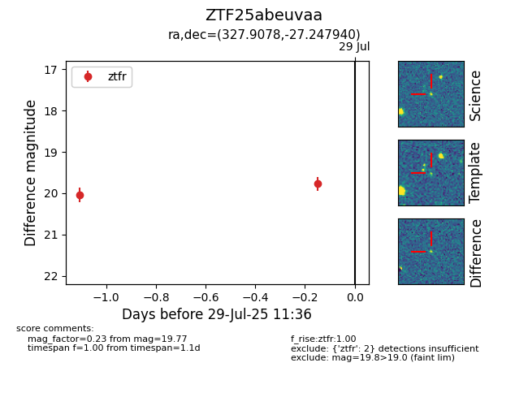

Target ZTF25abeuvaa at 2025-07-29 11:36, see:
FINK: fink-portal.org/ZTF25abeuvaa
Lasair: lasair-ztf.lsst.ac.uk/objects/ZTF25abeuvaa
ALeRCE: alerce.online/object/ZTF25abeuvaa
alt names
ZTF25abeuvaa (ztf,fink)
coordinates:
equatorial (ra, dec) = (327.9078,-27.24794)
galactic (l, b) = (22.0648,-50.23942)
photometry
last ztfr=19.77
2 ztfr detections
